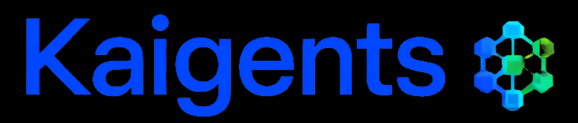

Kaigents: Product Requirements Document (PRD)
1. Overview
Kaigents is a Kubernetes-native platform for building, running, and operating AI agents in production environments, optimized for low total cost of ownership (TCO) with a strong focus on AMD Ryzen AI hardware.
Kaigents is designed for organizations that want:
- A Kubernetes-first operating model for AI agent workloads (GitOps-friendly, observable, policy-controlled).
- Commercial-safe open-source foundations (permissive licensing; avoid “fair-code” and restrictive redistribution terms for core dependencies).
- A clear path to Hybrid Execution across CPU + GPU + NPU to maximize hardware utilization and reduce cost.
- A platform that scales from single-operator / small cluster deployments to Platform Mode with enterprise identity integration.
This PRD describes Kaigents from a business/product perspective. It intentionally avoids dictating implementation details except where required by product positioning (e.g., Kubernetes-native-first, AMD Ryzen AI optimization, commercial-safe OSS).
1.1 At a glance
| Area | Summary |
|---|---|
| Primary value proposition | Production AI agents with Kubernetes-native operations and low-TCO Hybrid Execution (CPU/GPU/NPU) |
| Primary users | Platform engineers, AI application developers, SRE/ops, security/governance |
| Operating posture | Kubernetes-first; GitOps-friendly; on-prem / self-host friendly |
| Hardware bet | AMD Ryzen AI focus for efficiency and cost |
| OSS posture | Commercial-safe OSS core; optional integrate-only components allowed but clearly separated |
2. Problem Statement
Teams are building AI agents to automate workflows, answer questions, and operate systems. Moving from prototypes to production introduces recurring failures:
- Operational mismatch: agent frameworks often assume a single process or developer laptop rather than multi-tenant, observable, policy-controlled production environments.
- Unbounded cost: GPU-only serving and lack of routing/caching/scheduling can produce high and unpredictable costs.
- Fragile integrations: tool invocation and connector management becomes a security and governance risk without standardization.
- Poor traceability: it is difficult to audit “what the agent did” (tool calls, prompts, context, model used) and correlate it to outcomes.
Kaigents aims to be a “production substrate” where agents are:
- Declaratively defined
- Governed
- Observable
- Cost-aware
- Portable across environments
3. Goals and Non-Goals
3.1 Goals
- Provide a Kubernetes-native way to define and operate:
- agents and teams
- tool integrations
- executions (“runs”) and results
- Make agent executions traceable end-to-end:
- run timeline
- tool calls
- model calls
- artifacts/results
- Enable a credible low-TCO compute story:
- hybrid CPU/GPU/NPU usage where available
- routing policies so workloads can be placed appropriately
- Support multiple UX modalities:
- CRD/GitOps
- CLI
- dashboard
- Be viable as a commercial-safe open-source product:
- core dependencies permissive
- "integrate-only" optional components allowed but separated and clearly labeled
- Support a dual-layer licensing model:
- core platform: MIT licensed and freely redistributable
- managed service layer (hosted deployments, AI team configurations, the Link-Labs.AI cluster product, and the at-risk worker platform): commercial license required; not included in the OSS distribution
3.2 Non-Goals (initial releases)
- Building a fully managed SaaS offering under the MIT license.
- Competing with full low-code workflow automation platforms with large connector catalogs as a primary goal.
- Guaranteeing perfect agent correctness; the focus is on guardrails, traceability, and iterative improvement.
- Building a single agent framework to rule them all; Kaigents aims to support multiple runtimes via a stable execution contract.
4. Target Users
- Platform engineers
- Provide a safe, standardized way for teams to deploy and operate AI agents.
- AI application developers / agent builders
- Build agents that can reliably call tools, run workflows, and be promoted across environments.
- SRE / operations
- Maintain availability, performance, and cost controls; respond to incidents.
- Security / governance / compliance
- Enforce policy around data access, tool invocation, and auditability.
- Code-savvy serial entrepreneurs
- Rapidly design, deploy, and iterate on teams of agents as a product capability, without taking on bespoke platform engineering.
5. User Experience (UX) and Primary Workflows
Kaigents supports two modes:
- Solo Mode: a single team/operator runs Kaigents for internal workloads with minimal overhead.
- Platform Mode: centralized shared platform with identity integration, policy, and multi-team tenancy.
A third mode is anticipated (not required for MVP or v1):
- Builder Mode: users design and deploy new AI agent teams as reusable “products” (templates, catalogs, and shareable team definitions).
5.1 Install and bootstrap
- Operator installs Kaigents into a Kubernetes cluster.
- Operator verifies:
- platform health
- model serving connectivity
- tool-plane readiness
- Operator configures identity integration (Platform Mode) or local auth (Solo Mode).
5.2 Define and manage agents (declarative-first)
- A developer defines an agent (or team) using:
- CRDs (GitOps)
- CLI scaffolding
- UI forms (optional)
- A developer binds tools to the agent via a standardized tool-plane abstraction.
- A developer can test an agent interactively and then promote changes via GitOps.
5.3 Execute and observe runs
- A user triggers a run via:
- CLI
- UI
- API
- another agent (agent-to-agent)
- Kaigents records a run timeline including:
- inputs
- tool invocations (what/when/args/result)
- model requests
- intermediate artifacts
- final outputs
- Operators view:
- current run state
- historical run summaries
- failure reasons and retries
Terminology note (product vs MVP naming):
- In the refined Kaigents product domain model, an execution instance is a Work Request.
- In Milestone 1 MVP (and current CRDs/CLI), this is represented as a Run.
- This PRD uses Work Request when describing the product domain, and uses Run when describing Milestone 1 acceptance criteria and existing UX surfaces.
5.4 Hybrid Execution policies (cost + performance)
- Users/teams can declare preferences or constraints for execution:
- CPU-only for low-cost tasks
- GPU for throughput-intensive tasks
- NPU for local/edge efficiency where supported
- Operators can define guardrails:
- per-tenant quotas
- concurrency limits
- routing rules
Positioning note:
- Kaigents’ Hybrid Execution goal is to maximize hardware utilization on AMD Ryzen AI systems.
- The NPU can be the highest-throughput compute device for certain AI/ML workloads, but is currently the least supported across general LLM ecosystems.
- For complex models (including large code models and MoE-style models), Kaigents should support execution strategies that spread load across NPU + GPU + CPU to improve time-to-first-token (TTFT) and tokens-per-second (TPS) where feasible.
5.5 Governance and guardrails
- Platform administrators define policies for:
- which tools are allowed
- which namespaces/tenants can access which tools
- audit retention
- secrets handling
- Guardrails for high-risk actions (approval gates, policy-as-code, etc.) are required as a concept, but specific mechanisms are deferred to technical design.
6. Functional Requirements
6.1 Resource model and lifecycle
- Support declarative resources for:
- agent definitions and configurations
- tool integrations (including MCP servers)
- executions/runs and results
- Support explicit lifecycle operations:
- create/update
- disable/enable
- deprecate and migrate
MVP resource model (minimum):
- Agent (or Team) definition
- Tool integration reference
- MCP server reference (or an integration with kmcp-managed server resources)
- Run (execution request + status)
- Artifact references associated with a run
- Model endpoint reference (configuration/discovery target)
Product domain model (authoritative terminology):
- Process: reusable definition of a business procedure.
- Task: step/activity definition inside a process.
- Work Request: execution instance of a process (maps to Run in Milestone 1).
- Work Item: instance of a task created within a work request.
- Work Attempt: one attempt to perform a work item.
MVP scope note:
- Milestone 1 may represent Process/Task definitions using an embedded workflow/DAG representation associated with a Run.
- The first-class Process/Task definition model and its lifecycle (create/update/versioning) is expected to mature in later milestones.
6.2 Tool plane
- Support a standardized mechanism for tool integration, discovery, and invocation.
- Support policy and allowlisting for tools.
- Tool invocations must be observable and auditable.
Minimum bar (connector UX):
- Kaigents must support a minimal, consistent “connector” experience so teams can add tools without bespoke platform engineering.
- Each tool/connector must have a clear contract:
- JSON input schema (at minimum: required fields and examples)
- JSON output schema (at minimum: response shape and error shape)
- For MVP, Kaigents treats the MCP server as the source of truth for the contract and stores a versioned snapshot of the contract for auditability and UI/CLI rendering.
- Users must be able to:
- register a connector/tool and its configuration
- test a connector with sample inputs in a controlled way (dry-run style)
- view connector health and recent invocation outcomes
- Tool invocation must support safe defaults appropriate for production:
- explicit timeouts
- bounded output sizes (where applicable)
- clear error reporting that surfaces upstream HTTP/API failures
6.3 Execution and orchestration
- Support execution of multi-step workflows.
- Workflows must support:
- DAG dependencies
- concurrency
- retries with clear semantics
- cancellation
- The platform must support an “offload” mechanism for steps that require stronger isolation.
Process semantics requirements (from the product domain model):
- The product-level process graph must support explicit rework loops (cycles), not just DAGs.
- Rework must be bounded (attempt limits, time limits, or escalation policies).
- Human-in-the-loop steps (approval/review/assignment) must be representable as first-class waiting states.
- The execution engine must provide durable semantics for:
- waiting (timers, signals)
- resumption after component restarts
- reconstructable execution history suitable for audit
6.4 Artifacts and asset access
- Kaigents must provide a first-class artifact concept for runs (inputs, intermediate artifacts, outputs).
- Artifacts must be accessible via stable, environment-scoped URLs suitable for:
- CLI download
- UI preview
- downstream automation
- Artifact storage must support cloud-agnostic S3-compatible backends (AWS S3, MinIO, Ceph RGW) via standard S3 credentials/endpoints.
- The platform must preserve key HTTP response semantics (Range reads) for large artifacts.
- Observability must be first-class via JSON structured logging for Loki and Prometheus metrics endpoints.
- Analytics readiness: The platform must emit schema-stable event logs suitable for downstream real-time analytics (Data Lake integration).
6.5 Model serving integration
- Kaigents must support local/self-hosted model serving.
- Kaigents must support hybrid CPU/GPU/NPU execution routes (when available), and make model routing and policy an operator-visible concept.
- Kaigents must provide stable contracts for:
- chat / text generation
- embeddings
-
(optional) reranking
-
Kaigents should support endpoint discovery for model backends across common deployment patterns:
- in-cluster service DNS
- operator-managed ingress
- developer-local endpoints (for local testing)
MVP note:
- Kaigents MVP can depend on the models already deployed in the target Kubernetes cluster. The specific model set and access URLs are treated as deployment configuration and are referenced in existing CodeKnowl documentation.
6.6 UX surfaces
- CRD/GitOps workflow must be first-class.
- CLI must support:
- installation/bootstrap
- resource lifecycle management
- interactive invocation and inspection
- Dashboard must support:
- browsing agents/teams
- triggering runs
- viewing run timelines and tool-call traces
-
viewing errors and retry reasons
-
The dashboard should support browsing and previewing run artifacts where feasible.
Run timeline UX requirements:
- Kaigents must present a consistent “run timeline” view in both CLI and dashboard.
- A run timeline must allow users to answer, quickly and unambiguously:
- what happened
- in what order
- what the agent/tool/model returned
- what failed (and why)
- what was retried/cancelled
- Minimum timeline events to render:
- run created/started/completed timestamps and final status
- workflow node/step start/stop status changes (including retries)
- tool invocation events (tool name, request parameters, outcome summary)
- model invocation events (model identifier, input/output token counts if available, latency summary)
- artifact events (produced/updated artifact references)
- human interaction events when applicable (approval requested/approved/denied)
- The run timeline must support:
- filtering by event type (tool/model/artifact/workflow)
- jumping to artifacts referenced by events
- stable correlation identifiers that can be used to locate related telemetry in external observability tools
6.6 Identity and access
- Platform Mode must support:
- SSO-compatible authentication
- role-based access control
- audit trails for user actions
- Solo Mode may support simpler auth, but must not block migration to Platform Mode.
7. Quality Attributes (Non-Functional Requirements)
- Kubernetes-native-first: Kaigents must feel natural to operate with Kubernetes, GitOps, namespaces, and cluster policies.
- Performance and responsiveness: the system must support high concurrency and “many small steps” without excessive orchestration overhead.
- Reliability: runs should survive component restarts with clear resumption/retry semantics.
- Traceability: every run must be explainable via stored events and correlated telemetry.
- Security:
- secure secrets handling
- least privilege
- tool allowlisting and auditing
- Commercial-safe OSS posture: core must remain viable for commercial adoption and redistribution.
- Dual-layer licensing: the OSS core (MIT) and the commercial managed service layer are distinct boundaries; see licensing policy below.
7.1 Assumptions and Constraints
- Kaigents' core differentiation includes:
- Kubernetes-native operations
- AMD Ryzen AI optimization for lower TCO
- The platform must support on-prem and self-hosted deployments.
- The product must maintain a clear boundary between:
- redistributable permissive OSS core (MIT)
- integrate-only optional components that may have additional terms
- commercial managed service layer (not OSS; separate license required)
7.2 Licensing Policy
Core platform (MIT)
The Kaigents control plane, execution engine, CLI, and CRDs are MIT licensed. Anyone may use, modify, and distribute the core platform, including for commercial purposes.
Managed service layer (commercial license required)
The following are not part of the MIT distribution and require a separate commercial license: - Hosted or managed deployments of Kaigents sold as a service - Pre-built AI team configurations (software engineering team, sales team, tech support team, secops team, etc.) - The Link-Labs.AI cluster product (consolidated multi-team AI infrastructure) - The at-risk worker platform (workforce + AI hybrid delivery system) - Any tooling, automation, or integration built specifically to deliver Kaigents as a managed service to third parties
License evolution
The MIT license applies to the core platform. If and when Kaigents achieves significant traction, the license may be revisited (e.g., Apache-2.0 for stronger patent protection, or AGPL to protect the managed service layer from commoditization by large cloud providers). Any license change will apply to future releases only; existing MIT releases remain MIT.
MVP tenancy assumption:
- For MVP, the default multi-team isolation model is namespace per team.
8. Conceptual Architecture (Product-level capabilities)
Kaigents is composed of:
- Control plane: defines and manages agents, tools, and runs.
- Execution engine: performs agent runtime execution and workflow orchestration.
- Tool plane: manages tool servers and invocation.
- Model serving plane: integrates with model servers and enforces routing/policy.
- Data plane: stores run state, artifacts, and metadata.
- UX surfaces: CLI and dashboard.
Execution engine requirement (clarification):
- Kaigents requires a durable execution substrate capable of long-running Work Requests that may block on humans and external systems.
- The execution engine must preserve the separation between definitions (Process/Task) and executions (Work Request / Work Item / Work Attempt) so definitions can evolve without mutating execution history.
- The specific engine implementation is an architectural decision tracked in the ITD register.
(Technical implementation details belong in Architecture & Design; this section is intended to help stakeholders understand the product’s major capability areas.)
9. Buy vs Build Evaluation
Kaigents should include a continuing buy-vs-build evaluation for non-core capability areas (e.g., dashboards, optional eval platforms, connector ecosystems).
Evaluation criteria:
- licensing and redistribution safety
- Kubernetes operational fit
- integration complexity and ongoing maintenance
- performance and reliability
- security/governance compatibility
Deliverable:
- a short comparison doc and a recommendation for each major area (adopt vs integrate vs inspire vs avoid)
10. Release Plan (Milestones)
Milestone 0: PRD + platform baseline
- PRD approved
- initial core resource model documented at a product level
- initial “definition of done” for MVP documented
Acceptance criteria:
- PRD is approved by stakeholders.
- MVP scope is clearly bounded and understood.
Milestone 1: Solo Mode MVP (CRD + CLI + embedded workflow)
- install Kaigents
- define an agent and tools declaratively
Acceptance criteria agent:
docs/implementation/milestone-1-acceptance-student-research-assistant.md- run an agent and view a run timeline
- embedded DAG orchestration for multi-step tasks, noting that this milestone does not include cyclic rework or process-graph semantics
Acceptance criteria:
- A user can install Kaigents in a cluster and run a basic multi-step agent workload.
- A run produces a durable, queryable run timeline.
- The run timeline includes, at minimum, tool invocation events, model invocation events, workflow step events, and artifact events.
MVP definition of done (testable):
- CRDs exist for the MVP resource model and can be managed via GitOps.
- CLI can:
- apply/create resources
- trigger a run
- render the run timeline
- fetch artifacts referenced by the run timeline
- A run timeline includes, at minimum, tool invocation events, model invocation events, workflow step events, and artifact events.
- Artifacts are accessible via stable, environment-scoped URLs without requiring object-store credentials.
- Model endpoint discovery works for in-cluster service DNS and developer-local endpoints.
- Runs and timeline events have stable correlation identifiers that can be used to locate related telemetry.
Milestone 2: Platform Mode essentials (identity + policy)
- integrate with enterprise identity
- RBAC and audit trails
- tool allowlisting
Acceptance criteria:
- Users authenticate via SSO-compatible mechanism.
- Unauthorized users cannot invoke restricted tools.
Milestone 3: Hybrid Execution routing (CPU/GPU/NPU)
- add operator-visible routing/policy
- demonstrate hybrid execution patterns
Acceptance criteria:
- Workloads can be routed according to policy and observed in telemetry.
Milestone 4: Dashboard MVP
- browse agents
- trigger runs
- view run timelines and traces
Acceptance criteria:
- Operators can diagnose failures via UI without needing direct DB access.
11. Success Metrics
- Time to first successful run after installation.
- Run success rate over time and by agent/tool.
- Mean time to diagnose (MTTD) for run failures.
- Cost efficiency: work completed per unit compute cost (with emphasis on AMD efficiency story).
- Adoption: number of active users/teams and number of active agents.
12. Risks and Mitigations
- Complexity creep
-
Mitigation: prioritize a small number of first-class primitives; push non-core features into integrations.
-
Hybrid Execution support fragmentation
-
Mitigation: define stable contracts and policy surfaces independent of any one runtime backend.
-
Governance gaps (tools and data access)
-
Mitigation: enforce allowlisting, audit trails, and identity integration early in Platform Mode.
-
Telemetry overload / missing correlations
- Mitigation: standardize run events and OTel trace context propagation from day one.
13. Deferred decisions (post-MVP)
The following topics are intentionally deferred until they are required by concrete MVP implementation needs:
- Tenancy model deeper than namespace per team (e.g., true multi-tenant controls beyond namespace boundaries).
- Minimum guardrails for high-risk tool calls (approval gates, policy-as-code, etc.).
- MVP model set (LLM/embeddings/rerank) and minimum acceptable latency/cost profile on Ryzen AI hardware.
14. Sample teams / test cases (validation scenarios)
Kaigents is not primarily persona-driven; instead, it should be validated against concrete agent-team scenarios that exercise the platform’s design/build/deploy/operate loop.
14.1 Test case: CodeKnowl Milestone 11 (guardrailed agentic workflows)
Kaigents’ first end-to-end test case should be the “optional agentic workflows (guardrailed)” scenario from CodeKnowl Milestone 11.
Business validation outcomes:
- Kaigents can run a multi-step agent workflow that proposes changes and requires explicit approval before writing.
- Kaigents can run commands (tests/linters/build steps) only with explicit approval.
- The system provides an operator-visible run timeline with enough detail to audit what happened.
14.2 Test case: Asset Gateway (artifact access for runs)
The existing Asset Gateway implementation is a useful “simple but real” scenario for Kaigents to validate artifact handling.
Business validation outcomes:
- Runs can publish and retrieve artifacts (e.g., generated reports, images, logs) through a stable, environment-scoped access path.
- Operators can manage artifact retention and visibility without making buckets public.
14.3 Test case: Builder (agent/team design and deployment UX)
The earlier “AI Agent Builder” effort is a useful precursor for validating Kaigents’ build/deploy loop and UI expectations.
Business validation outcomes:
- Users can create/configure agents and tool integrations, and deploy them to the cluster.
- The product can support both “Solo Mode” and “Platform Mode” workflows without forcing a UI-first approach.